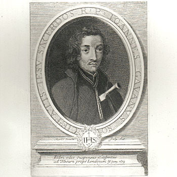

Isusovački blaženici
Svećenik
Bl. Ivan Gavan
1640. – 1679.
John Gavan djelovao je među katolicima Staffordshirea nakon školovanja na kontinentu. Lažne optužbe Titusa Oatesa dovele su do njegova uhićenja i mučeničke smrti.
Tekst je preveden i prilagođen uz pomoć umjetne inteligencije.

Izvor slike
- Spomendan
- 1. prosinca
- Zaštitništvo
- Nije navedeno u izvoru
- Životni vijek
- 1640. – 1679.
- Djelovanje
- Misije i evangelizacija · Progoni i progonstvo · Mučeništvo
- Razdoblje
- 17. stoljeće
- Rođenje — dostupni podaci
- 1640.; dan i mjesec nisu potvrđeni u provjerenom izvoru.
- Mjesto rođenja
- London, Engleska
- Datum smrti
- 20.06.1679.
- Mjesto smrti/mučeništva
- Tyburn, London, Engleska
- Okolnosti smrti/mučeništva
- Pogubljen vješanjem i sakaćenjem zbog katoličkoga svećeništva i djelovanja za progona.
- Uloga
- Svećenik
- Mučenik
- Da
- Ostale oznake
- Žrtva izmišljene Papističke urote Titusa Oatesa
- Pripadnost
- Isusovac
- Drugi oblici imena
- John Gavan · John
Životopis
John Gavan rođen je 1640. u Londonu. Školovao se u Saint-Omeru i 1660. ušao u Družbu Isusovu. Bogoslovni studij dovršio je u Rimu, gdje je 1670. zaređen za svećenika. Sljedeće se godine vratio u Englesku. Najviše je djelovao u Staffordshireu, služeći katolicima i onima koji su prihvaćali katoličku vjeru.
Godine 1678. Titus Oates proširio je izmišljene optužbe o katoličkoj uroti protiv kralja i države. Gavanovo ime pojavilo se u kasnijem krugu optuživanja. Za njegovo hvatanje ponuđeno je pedeset funti. Prerušen je stigao u London kako bi se prebacio u Belgiju, ali je 23. siječnja 1679. uhićen prije odlaska.
Povijesni prikaz Oatesove urote opisuje ozračje straha, pretresanje katoličkih kuća i prenapučene zatvore. Na suđenjima su svjedoci optužbe dobivali povlašteno povjerenje, a obrani je bilo teško osporavati njihove proturječne iskaze. To je zajednički pravosudni okvir Gavanova procesa, nastao iz optužaba za koje nije pronađena stvarna potvrda.
Dana 20. lipnja 1679. Gavan je pogubljen u Tyburnu zajedno s Tomom Whitbreadom, Johnom Fenwickom, Williamom Harcourtom i Antunom Turnerom. Svećenik koji je nakon školovanja na kontinentu osam godina služio u domovini postao je žrtva jednoga od najpoznatijih progona vezanih uz izmišljenu urotu.
Tekst je preveden i prilagođen uz pomoć umjetne inteligencije.
Pročitaj više na izvornoj stranici ↗